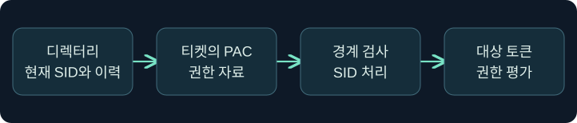

부모·자식 신뢰와 PAC 권한 증거
포리스트 내부의 신뢰 경로와 SID, 마이그레이션 이력, 자원 사용을 대조합니다.
1. 자식 도메인의 사건이 포리스트 조사로 번지는 이유
가상의 기술지원 도메인에서 도메인 컨트롤러 관련 이상 징후가 발생합니다. 며칠 뒤 같은 포리스트의 루트 도메인에 있는 정책 공유에서 관리 작업 경보가 뜹니다. 두 사건을 연결하려면 출발 도메인의 인증 자료에 어떤 위험이 있었고, 어느 신뢰 경로가 사용됐으며, 대상 서버가 실제로 어떤 권한을 행사했는지 알아야 합니다.
부모·자식 도메인은 별도의 계정과 정책을 관리하지만 동일 포리스트의 기본 신뢰 경로를 공유합니다. 자식 도메인 관리자 권한 자체가 루트 자원의 허용 목록에 등록되는 것은 아닙니다. 자식 DC의 발급 신뢰가 손상됐다면 루트의 인증과 인가에 도달할 수 있는 경로를 조사해야 합니다. 포리스트를 조사 범위에 넣는 결정과 실제 루트 자원 노출을 확정하는 결정에는 서로 다른 증거가 필요합니다.
2. 부모·자식 신뢰가 인증에서 하는 일
새 자식 도메인이 기존 트리에 추가되면 부모와 기본 양방향·전이 신뢰가 형성됩니다. 가상의 help.atlas.example에서 atlas.example에 있는 서비스에 연결할 때 Kerberos가 선택되면, 클라이언트는 자기 영역의 TGT에서 시작해 다른 영역의 서비스로 가는 참조를 이용할 수 있습니다. 대상 영역 KDC가 티켓을 발급해도 실제 서비스는 요청 신원과 대상 자원의 권한을 따로 평가합니다.
더 깊은 자식 도메인의 사건에서 루트와 직접 TDO가 보이지 않는다면 중간 부모 경로를 대조합니다. 경로가 있다고 해서 서비스 주체 이름 조회, 네트워크 통신, 대상 정책이 모두 충족된 것은 아닙니다. 정상적인 대상 접근에서도 캐시와 DC 선택 때문에 모든 요청이 같은 장비에서 관측되지는 않습니다.
3. SID, sIDHistory, PAC를 서로 다른 자료로 봅니다
SID는 계정이나 그룹처럼 권한 판단에 쓰이는 주체의 식별자입니다. 계정을 다른 도메인으로 이전하면 새 보안 주체가 다른 SID를 받습니다. 승인된 마이그레이션에서 이전 SID를 sIDHistory에 보존하면 기존 자원의 ACL을 한꺼번에 바꾸지 않고 접근 연속성을 관리할 수 있습니다. 이전 권한이 계속 필요하다는 업무 근거와 정리 시점이 중요합니다.
| 자료 | 관측 위치 | 확인할 질문 |
|---|---|---|
| 현재 SID·그룹 | 계정 도메인의 디렉터리 | 사건 당시 주체와 그룹은 무엇이었나요? |
| sIDHistory | 해당 주체의 디렉터리 속성 | 승인된 이전과 연결되는 값인가요? |
| PAC의 ExtraSids | Kerberos 권한 자료의 별도 SID 목록 | 어떤 SID가 전달됐으며 그 출처는 무엇인가요? |
| 유효 토큰 및 ACL | 대상 시스템과 자원 | 전달된 정보 중 무엇이 실제 접근 판단에 사용됐나요? |
PAC는 Kerberos 티켓에 담길 수 있는 Windows 권한 자료입니다. ExtraSids를 확인하더라도 각 값이 디렉터리의 sIDHistory에서 비롯됐다고 단정할 수 없습니다. KDC와 신뢰 경로의 처리 결과를 검토하고, 실제 대상의 권한 행사는 자원 로그와 접근 정책으로 대조합니다.

4. 기본 내부 신뢰와 격리 조건을 비교합니다
다른 영역에서 들어온 PAC의 SID를 검사하는 규칙은 신뢰 경계의 종류에 따라 달라집니다. Microsoft의 MS-PAC는 기본 포리스트 내부 신뢰와 격리된 부모·자식 신뢰를 구분합니다. 격리된 내부 신뢰는 지정된 SID 범위로 제한하는 별도 조건입니다. 외부 또는 교차 포리스트 신뢰의 규칙을 기본 내부 신뢰에 그대로 적용하면 정상 경로와 위험 경로를 잘못 분류할 수 있습니다.
| 사례 | 먼저 확인할 근거 | 단정하기 어려운 결론 |
|---|---|---|
| 내부 기본 경로 | 상대 도메인, TDO, KDC 간 관측, 권한 자료의 출처 | 내부라서 모든 SID가 그대로 전달됐다는 판단 |
| 격리된 내부 경로 | 사건 당시 특성과 MS-PAC 규칙, 대상에서 실제 보인 권한 | 격리 설정만으로 모든 자원 접근이 거부됐다는 판단 |
| 마이그레이션 직후 | 승인 문서와 sIDHistory 변경, 이전 ACL 사용 시기 | 이전 SID가 보였다는 이유만으로 변조 확정 |
| 특권 SID와 승인 기록의 불일치 | 발급 및 변경 감사, 대상 작업, 사건 당시 그룹 | SID 한 건만으로 어느 키가 노출됐는지 확정 |
설정 확인은 관측된 경로의 해석에 필요합니다. 학습에서는 필터링을 바꾸지 않으며 보호 기능 해제도 수행하지 않습니다.
5. 티켓 이상과 권한 행사를 나누어 조사합니다
17장의 사례에서는 정상 발급 기록이 있어도 뒤이어 제시된 티켓의 계보를 별도로 확인했습니다. 포리스트 내부 조사에서는 여기에 출발 도메인과 도착 도메인을 추가합니다. 자식 DC 또는 발급 신뢰에 문제가 있었다면 권한 자료의 신뢰성이 떨어질 수 있습니다. 어떤 신뢰 경로에서 권한 자료가 평가됐는지, 대상이 이를 실제 자원 접근에 썼는지까지 살펴봅니다.
대상 감사에서 민감한 파일 읽기가 먼저 보이면 서버·공유·요청 계정·시간을 남긴 뒤 해당 서비스의 로그온을 연결합니다. DC 기록에서는 참조 티켓과 서비스 티켓의 대상을 구별합니다. 같은 이름이나 가까운 시각만으로 사건을 연결하지 않고, 수집 구간·정상 서비스 계정·DC 선택·캐시 영향도 함께 기록합니다.
6. 공식 콘솔에서 보고 신원을 확인합니다
실제 화면 156: Fortra Beacon Console
Fortra 공식 콘솔 문서의 공개 일반 화면입니다. 2026년 11월 10일에 확인했습니다. 캡처의 설치 버전은 확인되지 않았으며 메뉴는 버전에 따라 달라질 수 있습니다. Cobalt Strike → Visualization → Session Table → 가상 LAB-CHILD-A 우클릭 → Interact를 선택한 뒤 하단 입력 줄에 getuid를 넣고 Enter를 누르는 미실행 절차입니다. 예시값은 어떤 신원 문맥에서 조사 메모를 작성하는지 확인하려고 선택했습니다. 별도 저장 없이 상단 반환 영역을 선택한 탭과 대조합니다. 값이 비거나 오래된 반환만 있으면 실행 상태와 세션을 먼저 확인합니다. 이번 콘솔 반환, PAC와 대상 권한 결과 화면은 확보하지 못했습니다. 콘솔 반환만으로 서비스 토큰이나 PAC를 판독할 수 없습니다.
7. 승인된 로그 자료를 단계별로 대조합니다
- 승인된 변경표에서 부모·자식 경로와 DC를 확인하고 UTC 기준 시각 범위를 정합니다. 신뢰 변경과 계정 이전은 별도 항목에 표시합니다.
- 이미 확보한 가상 DC 기록에서 4769의 서비스 이름과 요청 문맥을 검토합니다. 참조 대상과 최종 서비스 대상을 따로 적고, 서로 다른 DC의 기록을 구분합니다.
- 대상 호스트의 4624에서 인증 패키지, 로그온 유형과 대상 신원 문맥을 봅니다. 같은 호스트의 자원 감사가 로그온 식별자를 제공하면 호스트·시간·ID를 함께 대조합니다.
- 승인 문서, 사건 당시 그룹 및 ACL, 실제 작업 결과를 비교합니다. 디렉터리의 승인된 SID 기록이 실제로 전송·수락됐는지는 다른 관측으로 보강합니다.
실패와 성공을 확인한 지점, 로그 수집이 빠진 시스템, 기록을 보존할 기간을 각각 남깁니다. 절차 설명에는 티켓 생성·변경·주입이나 비밀 추출이 포함되지 않습니다.
8. 조건 변경으로 결론의 범위를 시험합니다
가상의 루트 자료실에서 자식 도메인 계정의 읽기가 관측됐다고 가정합니다. 같은 계정에 이전 프로젝트 권한의 정상 이력이 있고 감사 시간과 맞으면 승인된 이전과 관련된 접근인지 검토합니다. 반대로 관련 승인 없이 특권 그룹에 해당하는 SID가 대상 권한 증거에 보였다면 사건 당시 그룹·ACL과 DC 기록을 추가로 확보하고 발급 신뢰 이상을 조사합니다.
이때 티켓 발급 기록만 남았다면 실제 자원 접근은 미확인으로 기록합니다. 대상에서 읽기는 확인됐지만 관리자 변경은 없었다면 확인된 작업 범위는 읽기까지입니다. 외부 신뢰의 기록이 함께 있다면 같은 유형으로 합치기 전에 각 기록의 관측 도메인과 SID 검사 정책을 확인합니다.
9. 조사 범위와 복구 판단을 문서화합니다
자식 도메인의 발급 신뢰 훼손 의심을 확인했을 때는 관련 도메인과 포리스트의 관리 자원까지 조사 범위를 넓힐 근거를 기록합니다. 권한 경로, 실제 접근, 확인되지 않은 피해 범위를 구분한 보고서가 있어야 대응팀이 적절한 우선순위를 정할 수 있습니다. 무단 티켓 작업으로 가설을 재현하는 대신 승인된 로그, 구성, 업무 권한을 대조합니다.
기록에는 서비스 식별자, 도메인과 관측 시각, 자료 출처와 보존 상태를 남깁니다. 개인 식별이 불필요한 교육 자료에는 가상 식별자를 사용합니다. 실제 키나 티켓 내용은 교육 자료에 담지 않습니다.
10. 복습과 즉시 해설
복습 1. 부모·자식 기본 신뢰의 성격은 무엇인가요?
해설: 기본적으로 양방향·전이입니다. 인증 경로가 있어도 대상 권한은 따로 확인합니다.
복습 2. 자식의 관리 권한이 곧 루트 자원의 권한인가요?
해설: 루트 자원 인가는 해당 서비스가 판단합니다. 자식 발급 신뢰에 문제가 있다면 포리스트까지 조사 범위를 넓힐 이유가 됩니다.
복습 3. sIDHistory를 보존하는 정상 이유는 무엇인가요?
해설: 승인된 계정 이전 중 이전 SID로 관리되던 자원 접근을 이어갈 수 있게 합니다.
복습 4. PAC의 ExtraSids와 sIDHistory는 같은 자료인가요?
해설: 하나는 티켓 권한 자료에 있는 목록이고, 다른 하나는 디렉터리 속성입니다. 값의 출처를 따로 확인합니다.
복습 5. 모든 신뢰 경계에 같은 필터링 규칙을 적용하나요?
해설: 기본 내부·격리 내부·외부·교차 포리스트 경계에 맞는 규칙을 각각 대조합니다.
복습 6. 4769 성공으로 파일 읽기를 확인할 수 있나요?
해설: KDC에 기록된 티켓 요청 처리입니다. 파일 읽기는 서비스 또는 자원 감사에서 확인합니다.
복습 7. 대상에서 같은 로그온 ID를 찾으면 다른 서버도 같은 세션인가요?
해설: 로그온 ID는 해당 호스트 문맥에서 사용합니다. 호스트·시각·신원을 대조해 시스템 간 관측을 연결합니다.
복습 8. 정상 이전과 특권 이상은 어떻게 구분하나요?
해설: 승인 문서, 사건 당시 속성과 그룹, 대상 ACL과 실제 작업을 대조하고 누락된 증거를 명시합니다.
11. 공식 자료와 확인 범위
- Microsoft MS-PAC · SID 필터링과 클레임 변환
- Microsoft · sIDHistory 스키마
- Microsoft · Kerberos 서비스 티켓 요청 4769
- Microsoft · 로그온 성공 4624
2026년 11월 10일 자료를 확인했습니다. 제품·티켓·인증·비밀 수집·보호 정책 변경은 미실행입니다.